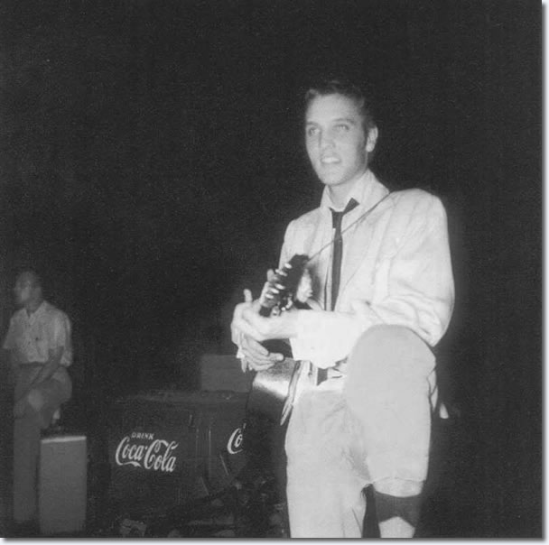
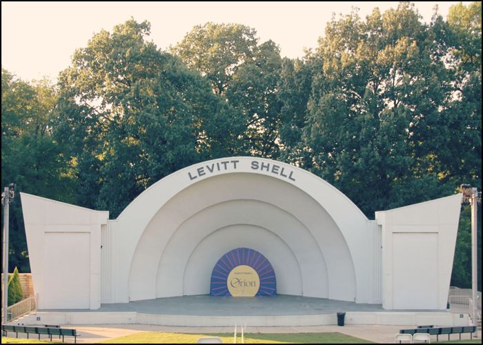

Elvis Aaron Presley was born January 8,1935 in Tupelo,Mississipp. The family did not line richly Veron(elvis dad) changed one odd job for another.The family had to rely on the government food aid or help from the neighbors.The family lost their name in may 1938 Elvis was only 3 Year old. In November 1948 he and his family moved to memphis.

Elvis received his first guitar when he was 11, and more many years that was his only guitar
Presley performed in publc for the first time at the Bon Air Club on July 17. Elvis still performed with his first guitar he played at the overton park shell at the end of the month.
 That performance become special beacuse of Elvis dance. He performed "Rubber Legs" for the first time but soon it would be he's most recongnizable signature movement.
In 1954, Elvis began his singing career with the legendary Sun Records label in Memphis. In late 1955, his recording contract was sold to RCA Victor. By 1956, he was an international sensation. With a sound and style that uniquely combined his diverse musical influences and blurred and challenged the social and racial barriers of the time, he ushered in a whole new era of American music and popular culture. This got the attention of Colonel Tom Parker that was considered the best promoter in the music business

This TV special relaunched Elvis career because elvis marked a return to live performance after a seven year period. He was dressed in all black leather and his voice was powerful.The concert was initially planned as a Christmas special by Elvis manager Colonel Tom Parker but Steve Binder and producer Bones Howe took creative control of Presley.

It was Robert F.Kennedy's Assassination that lead to the Creation of the song "If I can dream". The song feature direct quotes from the Civil Right leader Kennedy. Elvis recorded "If I can dream" in jue 23,1968.

He starred in 33 successful films, made history with his television appearances and specials.He has sold over one billion records, more than any other artist. His American sales have earned him gold, platinum or multi-platinum awards.Among his many achievements were 14 Grammy nominations (3 wins).